Parkings[exemple]
Parking souterrain, 380 places
Strasbourg · 9 500 m² · balayage, autolaveuse et haute pression en 2 jours
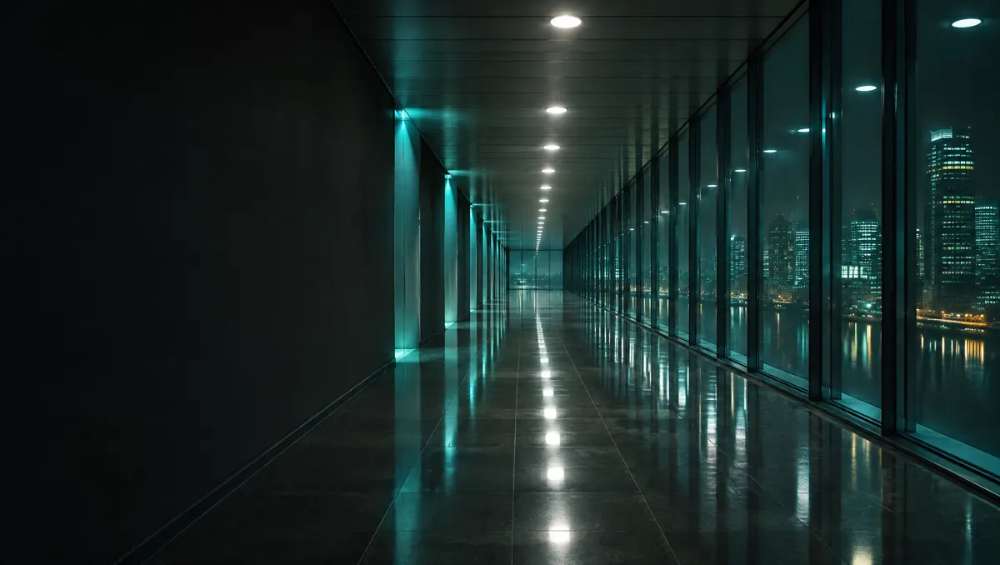
Faites glisser la poignée pour comparer.
Strasbourg · 9 500 m² · balayage, autolaveuse et haute pression en 2 jours
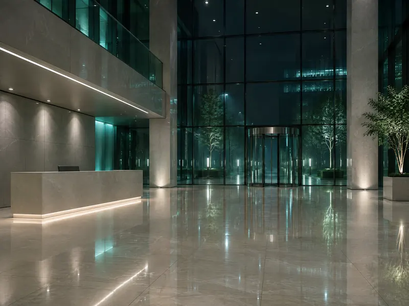
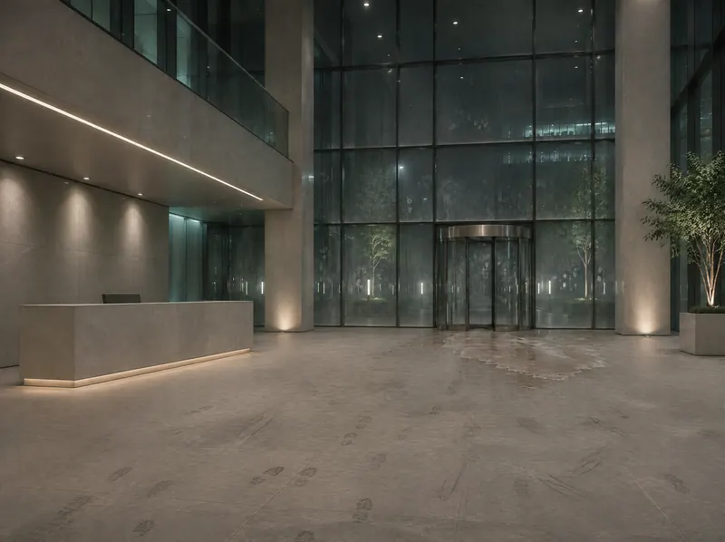
Schiltigheim · 650 m² · cristallisation du sol et vitrerie intérieure
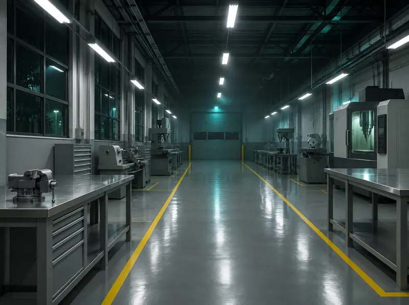
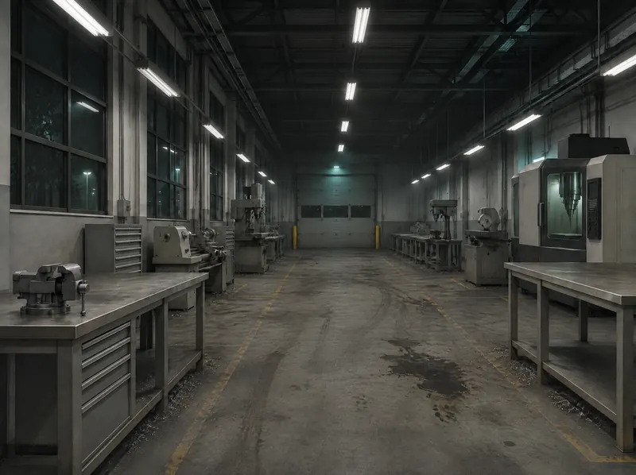
Obernai · 2 800 m² · dégraissage des sols pendant l’arrêt technique
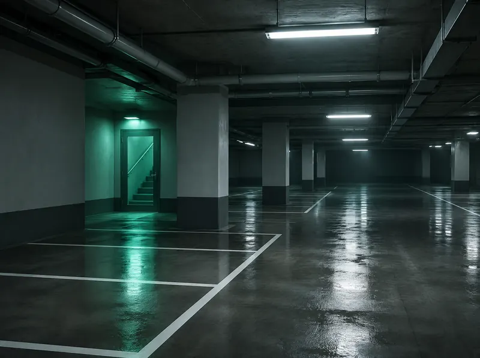
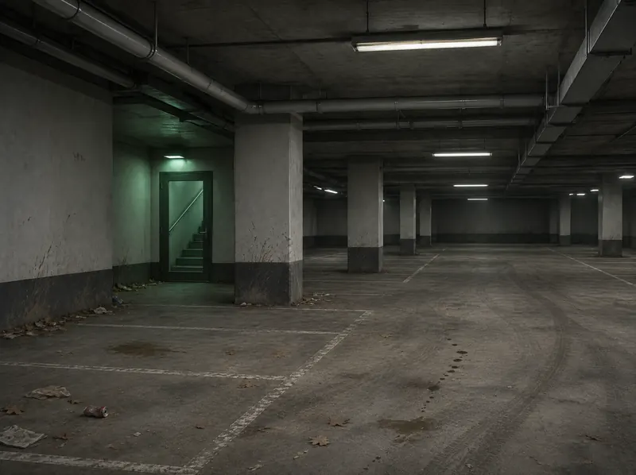
Illkirch-Graffenstaden · 120 places · campagne annuelle haute pression
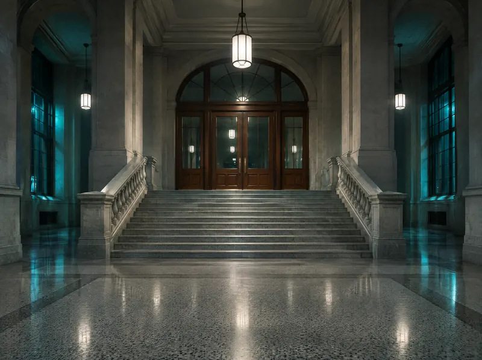
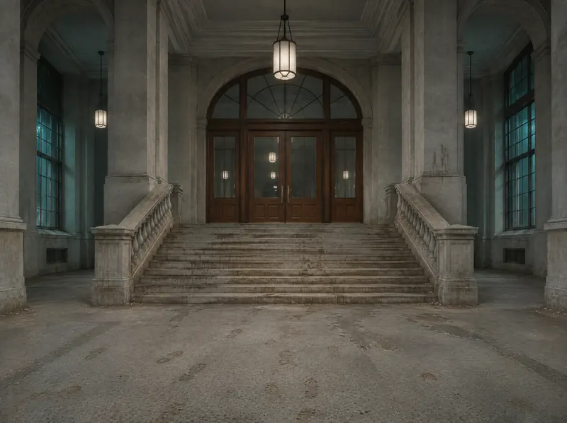
Colmar · 1 200 m² · entretien quotidien
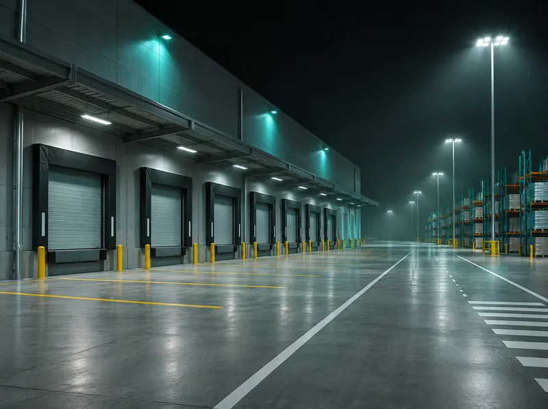
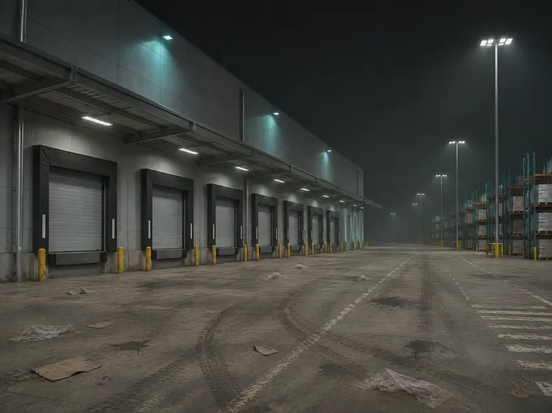
Mulhouse · 6 000 m² · autolaveuse autoportée en horaires décalés
Un seul interlocuteur pour nos trois résidences, et des parkings enfin propres après chaque campagne haute pression. Les copropriétaires l’ont remarqué dès la première fois.
En 2025
1 200 interventions
ponctuelles et régulières
15 000 m²
entretenus chaque mois
Valeurs fictives [à confirmer]
Visite gratuite et devis détaillé.